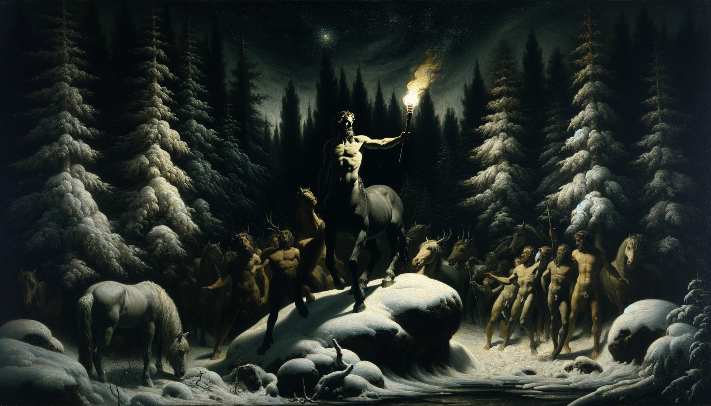

- 이탈리아의 화가 Caravaggio의 그림을 좋아합니다.
- 실제 성격도 괴팍하고 공격적이었다고 알려져 있습니다만
- 강한 대비와 역동적인 구도에서 오는 그의 그림에는 다른 그림에 없는 에너지가 느껴집니다.
1. DALL.E의 그림
- DALL.E는 그림을 잘 그립니다.
- 몇 줄의 프롬프트, 심지어 문장 하나만으로도 사진같은 그림, 화가가 그린 것 같은 그림을 그립니다.
- 하지만 아쉬움이 있습니다. 특색을 담기가 은근히 어렵습니다.
- 독창적인 주제와 화면 구성을 하면 조금 낫지만, 인터넷에 떠도는 그림들이 다 비슷비슷해 보입니다.
- 그림을 배울 때, 기존 화가의 그림을 따라서 그립니다.
- 서예도 비슷합니다. 그림을 따라 그리면 임화(臨畵), 글씨를 따라 쓰면 임서(臨書)라고 합니다.
- 단순히 베끼는 과정이 아니라 선배들이 어떤 생각과 느낌으로 그렸는지를 체득하는 과정입니다.
- DALL.E의 그림이 밋밋해보이는 또 다른 이유는 색 사용이 왠지 반복되는 느낌입니다.
- 구체적으로 예를 들어 말하기는 어려우나 청백색의 느낌이 자주 느껴집니다.
- 사람의 살색도 비슷비슷하고 얼굴 유형도 단조롭습니다.
- 학습 기반 모델의 한계일지도 모르고 학습한 데이터의 한계일지도 모르겠습니다.
2. 까라바조 스타일 그림 그리기

- 제가 가장 좋아하는 그림 중 하나입니다.
- 과감하게 배경을 어둡게 처리함으로써 골리앗의 잘린 머리, 다윗의 얼굴과 앳된 소년의 몸, 그리고 번쩍이는 칼날에 시선이 집중됩니다.
- 다윗의 얼굴과 골리앗 얼굴 절반, 그리고 머리카락까지 모두 배경에 묻어버렸습니다.
- DALL.E에서는 이 정도로 과감한 표현이 잘 되지 않습니다.
- 이런 느낌으로 눈밭에서 무리를 이끄는 켄타우루스 족장을 그려보고 싶었습니다.
- 주제를 선정한 이유는 몇 가지가 있지만 여기서는 생략합니다.
2.1. Explore > DALL.E 선택
- 전문적으로 그림을 그리는 것이 목적이라면, ChatGPT4보다 좋은 선택이 있습니다.
- 좌측의 Explore에서 DALL.E를 선택하는 것입니다.
- ChatGPT4가 그림을 한 장씩 주는 반면에 DALL.E는 두 장씩 줍니다.
- 랜덤에 상당 부분 의존할 수 밖에 없는 환경에서 선택지가 많은 것이 좋습니다.
2.2. 프롬프트 작성
- ChatGPT에서 DALL.E를 쓸 때 다음과 같은 과정을 거칩니다.
① 사용자가 프롬프트를 입력하면 (input prompt)
② ChatGPT가 DALL.E와 함께 나머지 부분을 상상합니다. 이 때 프롬프트가 변경됩니다. (ChatGPT prompt)
③ DALL.E가 이를 받아 그림으로 표현합니다.
이 때 image seed layer가 랜덤으로 할당되는데, 같은 프롬프트라도 이미지가 다르게 생성됩니다.
- 머리 속에 구체적인 그림이 없다면 ②에서 ChatGPT의 도움을 받을 수 있습니다.
- 그러나 지금의 저는 머리 속에 그림이 있는 만큼, 프롬프트를 최대한 자세히 작성합니다.
- 프롬프트를 자세히 작성하지 않으면 ChatGPT가 끼어들어 의도를 뒤틀 수 있기 때문입니다.
input prompt: “A centaur holding a torch standing on a big rock of snow-covered forest at night and other centaurs gathered around nearby. The centaurs have a human upper body and a horse lower body, glancing far away among tall trees. The forest is full of various pine trees and tall trees without leaves but snow on them. stars are clearly seen above sky, creating a magical, enchanted unrealistic atmosphere. The scene captures the wisdom of the centaur as a leader of a company. cinematic view. sharp contrast with low brightness, like Caravaggio style. almost entire image is dark as black, but some highlights in limited region where the torch light is shed are bright with white, yellow and orange. oil on canvas with thick brush. landscape view”
- <16/16>이라는 표식이 있습니다. 원하는 그림을 찾아 16번 반복 실행했다는 뜻입니다.
- 반인반마여야 할 켄타우루스를 사람이 말을 타고 있는 모습으로 그리기도 하고, 말 머리 사람으로 그려서입니다.
- 현재는 결과가 마음에 들지 않으면 원하는 결과가 나올때까지 반복하는 수밖에 없습니다.
- 원하는 이미지에 가까운 오른쪽 그림은 다음과 같습니다.
- ChatGPT가 수정한 프롬프트를 확인하면 다음과 같습니다.
ChatGPT prompt: “A scene depicting a centaur holding a torch, standing on a large rock in a snow-covered forest at night. This centaur, exuding wisdom as a leader, is surrounded by other centaurs with a human upper body and horse lower body. They are all glancing into the distance among tall pine trees and leafless trees draped in snow. Above, the stars in the sky create a magical, enchanted atmosphere. The setting is cinematic, with a Caravaggio-like sharp contrast, low brightness, and an almost entirely dark background. The limited regions illuminated by the torch light are bright with white, yellow, and orange, resembling an oil painting on canvas with thick brushstrokes. The overall composition is in landscape view.”
- 내용은 바뀐 것이 없이 문장만 일부 수정된 정도입니다. 그나마도 거의 같습니다.
- 만약 입력을 대충 했다면 생각지도 않은 디테일이 마구 첨가되었을 것입니다.
2.3. 명도는 낮추고 대비는 올리고
- 까라바조 그림의 특징을 살려 명도를 낮추고 대비를 높입니다.
- 생성된 이미지의 전반적인 모습을 유지하려면 image seed number를 유지하면 됩니다.
- 현재는 image seed number를 직접 입력할 수는 없으나 생성된 이미지의 값을 유지하는 것은 가능합니다.
- 프롬프트에 “이미지 시드 넘버를 유지해줘.”나 “keep the image seed number”를 입력하면 됩니다.
- 시드 넘버를 유지했지만 디테일이 조금씩 변합니다. 어쩔 수 없는 현재의 한계입니다.
- 이미지가 점점 어두워집니다. 하지만 아직 부족한 느낌입니다.
- 더 어둡게 하라고 지시를 하자 “이미지 퀄리티와 세부 유지가 안된다. 괜찮은가?”라고 묻습니다.
- 과감하게 “디테일을 희생하라”는 추가 프롬프트를 제공하고, 결과물을 확인합니다.
- 비로소 마음에 듭니다. 확대해서 확인합니다.

- 주변부가 좀 바뀌기는 했지만 허용 범위 이내입니다. 오히려 좋은 면도 있습니다.
3. 까라바조 그림과 명도 분포 비교
- 눈으로 보기에는 제법 괜찮은데, 데이터도 그런지 확인합니다.
- ChatGPT4 또는 Data Analysis를 선택해서 새 창을 열고 그림을 올립니다.
- “명도 분포를 커널밀도추정(KDE) plot으로 시각화하라”는 프롬프트를 입력하면, 그림이 나옵니다.
- 눈으로 보는 바와 같이 상당히 낮은 값에 몰려 있습니다.
- 처음의 <골리앗의 머리를 든 다윗> 이미지를 올리고 “같은 작업을 반복하되, KDE plot을 겹쳐 그려라”는 명령을 입력합니다.
- 한 차례 오류가 났습니다. 그림이 커서 처리에 1분을 초과했기 때문에 중단된 것입니다.
- 그러나 Data Analysis는 웬만한 오류를 스스로 해결합니다.
- 재작업 후 그려진 그림에서, 전반적인 분포가 매우 유사함을 확인할 수 있습니다.
- “이만하면 된 것 같다”는 느낌이 사실로 증명되었습니다. :)
- 제가 DALL.E로 그린 그림의 부분입니다.
- 저런 지도자를 만나고 싶기도 하고 저런 지도자로 성장하고 싶기도 합니다.